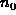

Data Structures and Algorithms
with Object-Oriented Design Patterns in Java
Data Structures and Algorithms
with Object-Oriented Design Patterns in JavaIn 1892, P. Bachmann invented a notation for characterizing the asymptotic behavior of functions. His invention has come to be known as big oh notation:
Definition (Big Oh) Consider a function f(n) which is non-negative for all integers. We say that ``f(n) is big oh g(n),'' which we write f(n)=O(g(n)), if there exists an integer  and a constant c>0 such that for all integers
,
.
 Copyright © 1998 by Bruno R. Preiss, P.Eng. All rights reserved.
Copyright © 1998 by Bruno R. Preiss, P.Eng. All rights reserved.